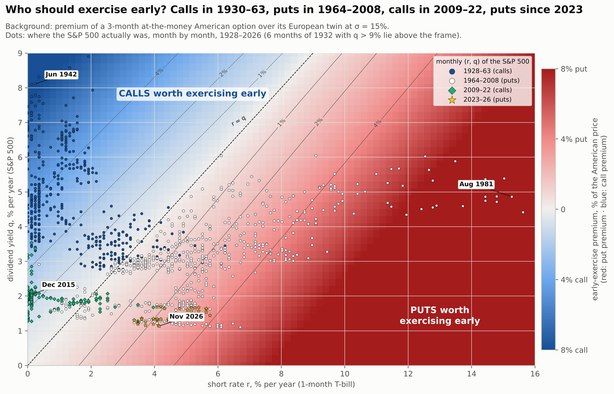
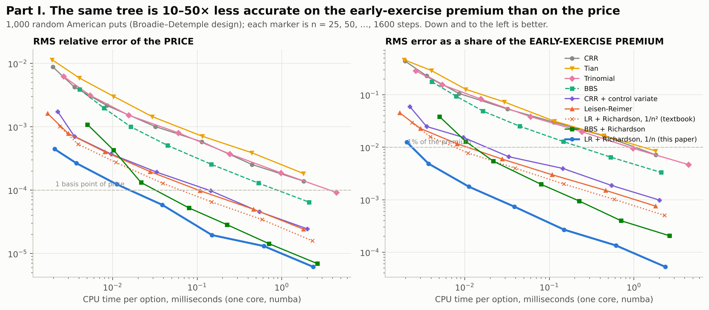
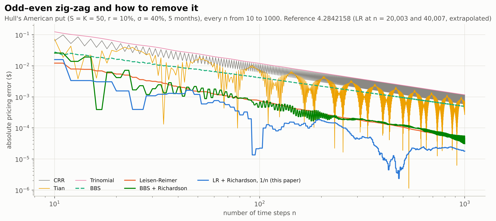
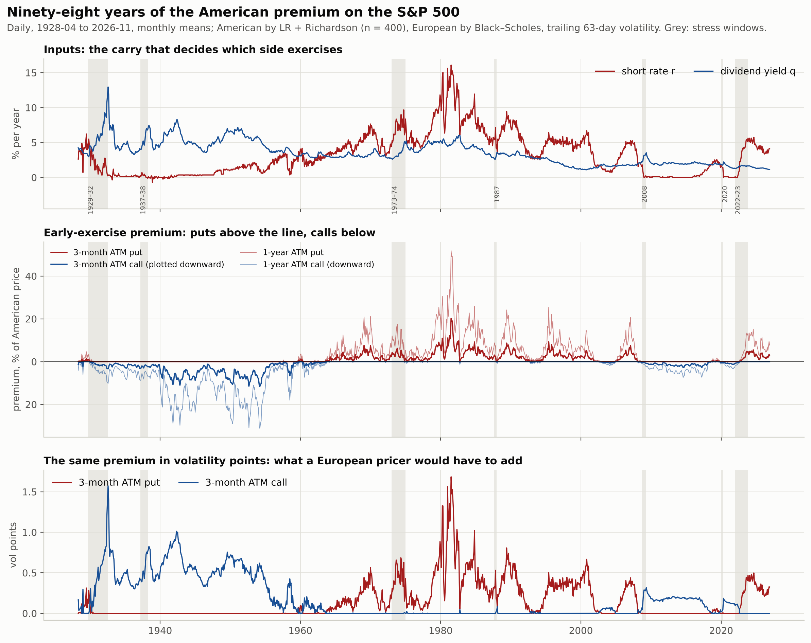
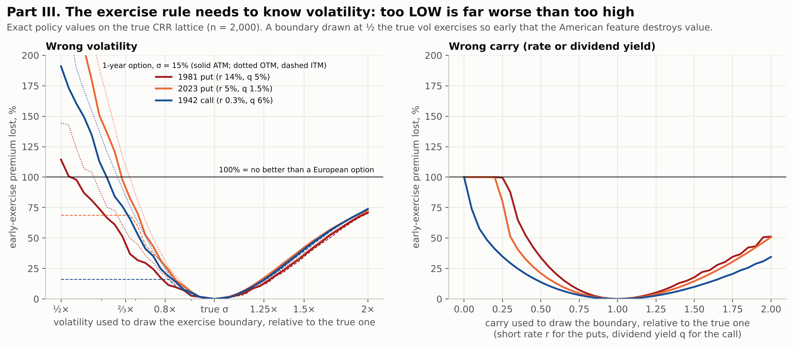
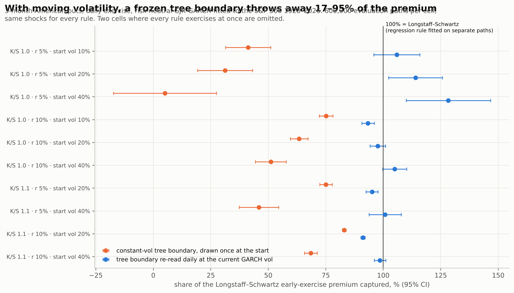

Working paper · Project 15
Thirteen lattices for American options, ninety-eight years of early-exercise premia on the S&P 500, and what the exercise rule needs to know
Project 15 of 30 Quant Research Projects · Working paper, November 2026

The binomial tree is the textbook engine for American options, and the textbook exercise stops at "the tree converges". This paper asks three questions that sit underneath it. (I) Which lattice should you actually use, and accurate to what? (II) Over a century of real interest rates, dividend yields and volatility, when did the American feature of an index option matter at all, and for which side? (III) Early exercise is a decision rule. How much of its value survives when the rule is drawn with the wrong volatility, or in a world where volatility moves?
Main findings
Most listed equity and ETF options are American. Most introductions to the binomial tree price one American put, show the price converging, and stop. Three things are left unasked.
Research questions. (I) Which lattice reaches a given accuracy on the price and on the premium fastest? (II) From 1928 to 2026, how large was the EEP of S&P 500 puts and calls, and which side carried it? (III) How much premium is lost when the exercise boundary is drawn with the wrong volatility or carry, and does a tree boundary still work when volatility follows a GARCH process?
Hypotheses stated before running Part II and Part III (H1 is in the project thread from the first message): H1 in the high-dividend, near-zero-rate 1940s it was the American call, not the put, that carried the early-exercise premium. H2 the European price is a poor proxy (error > 1%) on a non-trivial share of days. H3 (which turned out to be wrong) the envelope theorem makes the value of an exercise rule insensitive to the volatility used to draw it: I expected a 25% volatility error to cost under 5% of the premium.
Ideas this builds on: Cox, Ross and Rubinstein (1979); Jarrow and Rudd (1983); Trigeorgis (1991); Tian (1993); Leisen and Reimer (1996); Broadie and Detemple (1996) for the BBS/BBSR methods and the random-contract test design; Hull and White (1988) for the control variate; Longstaff and Schwartz (2001); Duan (1995) for risk-neutral GARCH; McDonald and Schroder (1998) for put–call symmetry. To my knowledge, a century-long history of index early-exercise premia and the exact cost of a mis-drawn exercise boundary have not been published.
src/trees.py implements thirteen lattice methods with a continuous dividend yield, compiled with numba. They share
one backward-induction kernel and differ only in (u, d, p) or in how the last step and the extrapolation are done:
| Method | Idea |
|---|---|
| CRR | u = e^{σ√Δt}, d = 1/u |
| Jarrow–Rudd | drift in the nodes; risk-neutral p (so the tree is arbitrage-free) |
| Tian | matches the first three moments |
| Trigeorgis | log-space tree with the drift in p |
| Trinomial | Boyle / Kamrad–Ritchken, λ = √3 |
| Leisen–Reimer | nodes centred on the strike via the Peizer–Pratt inversion; n odd |
| CRR avg(n, n+1) | averages away the odd–even zig-zag |
| BBS | CRR whose last step is the Black–Scholes value (Broadie–Detemple) |
| BBS + Richardson | 2·BBS(n) − BBS(n/2) |
| LR + Richardson (1/n) | 2·LR(2m) − LR(m) with the exact step ratio (this paper's choice) |
| LR + Richardson (1/n², textbook) | (4·LR(2m) − LR(m)) / 3 |
| CRR + control variate | American_tree − European_tree + Black–Scholes (Hull–White) |
| LR + control variate | the same on LR |
The Black–Scholes function prices the out-of-the-money side and gets the other by parity, as in project 04.
Following Broadie and Detemple (1996), 1,000 American puts and 300 American calls on S = 100 are drawn at random: K ∼ U[70, 130], σ ∼ U[10%, 60%], T ∼ U[0.1, 1] years with probability 0.75 and U[1, 5] otherwise, r ∼ U[0, 10%] with probability 0.8 and 0 otherwise, q ∼ U[0, 10%] (calls: U[1%, 10%]). The sample includes the q > r region where calls are exercised early.
The reference value is LR at n = 10,001 and 20,003 extrapolated with 1/n weights. Two independent checks on 60
contracts: BBS + Richardson at n = 40,000 agrees to a median 5 × 10⁻⁷ (max 9 × 10⁻⁶), and LR + Richardson at
n = 40,004 to a median 1 × 10⁻⁸ (max 1 × 10⁻⁵). The RMS relative disagreement is 1 × 10⁻⁷, more than 50 times
below the smallest error reported below (results/reference_check.csv).
Errors are measured two ways: relative to the price (on contracts worth at least $0.50, n = 928 puts) and relative to the premium itself (on contracts whose premium is at least 5 cents, n = 386 puts). Timings are single-core.

RMS relative error, American puts (results/accuracy_errors.csv; calls give the same ranking):
| Method | price, n = 200 | price, n = 1,600 | premium, n = 200 | premium, n = 1,600 | ms per option, n = 1,600 |
|---|---|---|---|---|---|
| CRR | 1.0 × 10⁻³ | 1.4 × 10⁻⁴ | 5.4% | 0.72% | 1.8 |
| Tian | 1.4 × 10⁻³ | 1.8 × 10⁻⁴ | 7.3% | 0.85% | 1.8 |
| Trinomial | 8.0 × 10⁻⁴ | 9.2 × 10⁻⁵ | 3.8% | 0.47% | 4.4 |
| BBS | 5.1 × 10⁻⁴ | 6.5 × 10⁻⁵ | 2.5% | 0.33% | 2.1 |
| CRR + control variate | 1.9 × 10⁻⁴ | 2.5 × 10⁻⁵ | 0.66% | 0.10% | 2.0 |
| Leisen–Reimer | 2.0 × 10⁻⁴ | 2.4 × 10⁻⁵ | 0.60% | 0.076% | 1.8 |
| LR + Richardson, 1/n² | 1.3 × 10⁻⁴ | 1.6 × 10⁻⁵ | 0.40% | 0.050% | 2.3 |
| BBS + Richardson | 5.2 × 10⁻⁵ | 6.9 × 10⁻⁶ | 0.20% | 0.021% | 2.6 |
| LR + Richardson, 1/n | 5.9 × 10⁻⁵ | 6.2 × 10⁻⁶ | 0.074% | 0.0053% | 2.3 |
What this shows:

Part II uses LR + Richardson (1/n) at n = 400, which has a premium RMS error near 0.03%.
| Input | Source | Coverage |
|---|---|---|
| S&P 500 price | ^GSPC daily close (Yahoo, via project 03) | 1927-12 to 2026-11-17 |
| Short rate r | Ken French RF (1-month T-bill), 12·ln(1+RF), applied within the month it is quoted for; ^IRX (13-week bill) after 2026-09 | 1926-07 to 2026-11 |
| Dividend yield q | Shiller trailing 12-month dividend / price, ln(1 + D/P), applied from the following month; from 2023-07 implied from SPY (total return minus ^GSPC price return over 252 days, plus SPY's 0.0945% fee) | 1928-04 to 2026-11 |
| Volatility σ | trailing 63-day close-to-close volatility of ^GSPC | 1928-04 to 2026-11 |
All inputs are known at the close of the pricing day. The SPY-implied yield tracks Shiller's in the 2007–2023
overlap with correlation 0.84 and a mean absolute gap of 15 bp (results/dividend_splice_check.csv).
On every one of 24,775 trading days I price American and European puts and calls (ATM 1 month, 3 months and 1 year;
3-month 10% OTM and ITM).

H1 confirmed, and the pattern repeats. Mean premium as a share of the American price, 3-month ATM
(results/history_summary.csv):
| Period | r | q | put premium | call premium | days the put premium is larger |
|---|---|---|---|---|---|
| 1930–1963 | 1.1% | 5.0% | 0.02% | 3.5% | 3.5% |
| 1964–2008 | 5.6% | 3.1% | 2.8% | 0.03% | 92% |
| 2009–2022 | 0.5% | 2.0% | 0.04% | 1.1% | 11% |
| 2023–2026 | 4.5% | 1.4% | 3.0% | 0.00% | 100% |
The extremes are large. Over 1942 (r = 0.3%, q = 7.4%) a 3-month ATM call's premium averaged 7.9% of its price, and 22% for one year. In 1981 (r = 13.7%) the 3-month put's premium was 12.3%, and 33% for one year. In November 2026 it is 2.8% (0.32 vol points) for the 3-month put, and zero for the call.
In volatility units, a European pricer used on an American 3-month ATM option would need to add 0.16–0.17 vol points on average over the century, and up to 1.7 points in 1981 (bottom panel of Figure 4).
H2 confirmed. The European price is more than 1% below the American on 38% of days for the 3-month ATM put, 36% for the call, and 73% for at least one of the two. For one-year options the either-side figure is 93%.
Stress windows. The premium is driven by carry, not by fear. In the 2008 crisis (σ = 51%) and the 2020 crash (σ = 45%) the put premium was 0.00%, because bills paid nothing, and the call carried 0.4% and 0.2%. In 1973–74 (r = 7.2%) the put premium averaged 3.3%, and over the 2022–23 hikes it rose from zero to 4.7% in October 2023. In 1929–32 and 1937–38 the call side dominated (1.3% and 2.2%).
The exercise boundary. In put regimes the 3-month ATM put should be exercised once the index falls about
1.4–1.5 standard deviations (σ√T) below the strike (median S*/K = 0.91–0.92). In call regimes the call should be
exercised about 1.5–1.7 standard deviations above it (results/history_boundary.csv).
Robustness. Replacing the 63-day volatility with a 5-year one, a 21-day half-life EWMA or a constant 15% changes
the decade means substantially (the 1930s call premium goes from 1.8% to 4.5% at a constant 15%, because volatility
was then 33% and a higher volatility lowers the premium share). It never changes which side carries the premium in
any decade (results/history_robustness.csv). The (r, q) map in the header figure is computed at σ = 15% and is
not used for the daily numbers.
A lattice gives an exact way to value a policy rather than an option. crr_boundary extracts the critical price
at every step. crr_policy_value then values "exercise when the price crosses this boundary" on the true lattice
by backward induction, with no Monte Carlo noise. A test checks that the true boundary reproduces the American price
to 10⁻¹².
Three regimes from Part II, each for a 1-year option with σ = 15%: a 1981 put (r 14%, q 5%), a 2023 put (r 5%, q 1.5%) and a 1942 call (r 0.3%, q 6%), at the money, 10% in and 10% out of the money; n = 2,000.

Share of the premium lost, at-the-money (results/misspec_sigma.csv):
| boundary drawn at | ½σ | ⅔σ | 0.8σ | 0.9σ | 1.1σ | 1.25σ | 1.5σ | 2σ |
|---|---|---|---|---|---|---|---|---|
| 1981 put | 114% | 51% | 11% | 2.5% | 3.2% | 11% | 38% | 71% |
| 2023 put | 263% | 98% | 24% | 5.6% | 4.1% | 15% | 44% | 72% |
| 1942 call | 191% | 76% | 19% | 5.3% | 4.0% | 14% | 42% | 74% |
H3 rejected. The envelope theorem holds, since the loss is second-order near the truth (about 3–5 × (ln m)²). But the premium is itself small, so a second-order loss is a large share of it. A boundary drawn at too low a volatility exercises too early: it gives up an option worth more than the interest or dividend it captures. Below about ⅔σ that destroys more value than the American feature is worth. Overestimating volatility only delays exercise, and the loss tends to 100% (never exercise), not beyond. The flat dashed lines are the ITM contracts, where a low-volatility boundary says "exercise now".
The carry input behaves the same way: drawing the boundary with 0.75× the true carry costs 3–7% of the premium,
and 0.5× costs 14–34% (results/misspec_rate.csv).
Two heuristics: "exercise when intrinsic value exceeds the European value of what is left" loses 69–94% of the
premium in 7 of the 9 contracts, and "exercise as soon as it is in the money" loses up to 16.5 times the premium (results/heuristics.csv).
The lattice assumes constant volatility. To test the boundary where it does not hold, I fit a Gaussian GJR-GARCH(1,1) with a risk premium λ√h to daily S&P 500 excess returns, 1928–2026 (24,774 days; α = 0.040, γ = 0.093, β = 0.903, λ = 0.045), and simulate it under Duan's (1995) risk-neutral measure (persistence 0.993, long-run volatility 21.9%). A 3-month American put can be exercised daily, with r ∈ {5%, 10%}, q = 1.5%, K/S ∈ {1.0, 1.1} and starting volatility ∈ {10%, 20%, 40%}. Four rules are evaluated on the same 600,000 paths per cell:
Validation (constant volatility, where the exact daily-exercise value is known from a lattice): the tree rule
captures 89–99% of the exact premium and LSM 77–99%. LSM is weakest at high volatility, which is why "captured" below
can exceed 100% (results/lsm_gbm_validation.csv).

Share of the LSM premium captured (results/garch_policies.csv; two deep-ITM, low-volatility cells where every rule
exercises immediately are left out):
| cell (K/S, r, start vol) | static tree | dynamic tree | vol when the static rule exercises vs assumed |
|---|---|---|---|
| 1.0, 5%, 10% | 41% ± 10 | 106% ± 10 | 1.37× |
| 1.0, 5%, 20% | 31% ± 12 | 114% ± 12 | 1.24× |
| 1.0, 5%, 40% | 5% ± 22 | 128% ± 18 | 1.16× |
| 1.0, 10%, 10% | 75% ± 3 | 93% ± 3 | 1.37× |
| 1.0, 10%, 20% | 63% ± 4 | 98% ± 3 | 1.27× |
| 1.0, 10%, 40% | 51% ± 7 | 105% ± 5 | 1.20× |
| 1.1, 5%, 20% | 75% ± 3 | 95% ± 3 | 1.05× |
| 1.1, 5%, 40% | 46% ± 9 | 101% ± 7 | 1.04× |
| 1.1, 10%, 20% | 83% ± 1 | 91% ± 1 | 1.04× |
| 1.1, 10%, 40% | 69% ± 3 | 99% ± 3 | 1.07× |
(± is the 95% half-width from paired differences with LSM.)
The mechanism is the one in 4.1. Under the leverage effect a falling index raises volatility, so the put is deep in the money exactly when the true boundary has moved down. A boundary frozen at the starting volatility then exercises too early: volatility at the static rule's exercise is 4–37% above what the rule assumed. The dynamic rule beats the static one in every cell, with z between 5.9 and 11.2 even under a conservative standard error (the sum of the two paired errors against LSM). All 10 survive a Holm correction trivially. Against LSM the dynamic rule is ahead in 5 cells (significantly at the 5% level in 2) and behind in 5 (significantly in 3, worst 91%). A constant-volatility tree is therefore a good exercise engine in a stochastic-volatility world, as long as its volatility input is kept current.
I reviewed the first complete draft as a hostile referee would. The points raised, and what was done:
pip install -r requirements.txt
bash run_all.sh # about 20 minutes on 4 cores (18 min measured on a clean copy); accuracy.py takes most of it
python -m pytest tests # 36 tests: convergence, parity, McDonald–Schroder symmetry, policy evaluation, data
| File | What it does |
|---|---|
src/trees.py |
13 lattice engines, exercise boundary, exact policy evaluation, lattice Greeks |
src/build_data.py |
S&P 500 inputs (price, r, q, σ) from data/raw |
src/accuracy.py |
Part I: random contracts, references, accuracy and timing grid |
src/history.py |
Part II: daily premia 1928–2026, boundaries, (r, q) map, robustness |
src/garch.py |
GJR-GARCH estimation and risk-neutral simulation |
src/exercise.py |
Part III: lattice misspecification, heuristics, GARCH world, LSM |
src/figures.py |
All figures |
crr_delta).Andersen, L. and Broadie, M. (2004). Primal-dual simulation algorithm for pricing multidimensional American options. Management Science. · Broadie, M. and Detemple, J. (1996). American option valuation: new bounds, approximations, and a comparison of existing methods. RFS. · Cox, J., Ross, S. and Rubinstein, M. (1979). Option pricing: a simplified approach. JFE. · Duan, J.-C. (1995). The GARCH option pricing model. Mathematical Finance. · Glosten, L., Jagannathan, R. and Runkle, D. (1993). JF. · Holm, S. (1979). Scand. J. Stat. · Hull, J. and White, A. (1988). The use of the control variate technique in option pricing. JFQA. · Jarrow, R. and Rudd, A. (1983). Option Pricing. · Leisen, D. and Reimer, M. (1996). Binomial models for option valuation: examining and improving convergence. Applied Mathematical Finance. · Longstaff, F. and Schwartz, E. (2001). Valuing American options by simulation. RFS. · McDonald, R. and Schroder, M. (1998). A parity result for American options. J. Computational Finance. · Shiller, R. Irrational Exuberance data. · Tian, Y. (1993). A modified lattice approach to option pricing. J. Futures Markets. · Trigeorgis, L. (1991). A log-transformed binomial numerical analysis method. JFQA.
Code: MIT. Text and figures: CC BY 4.0.